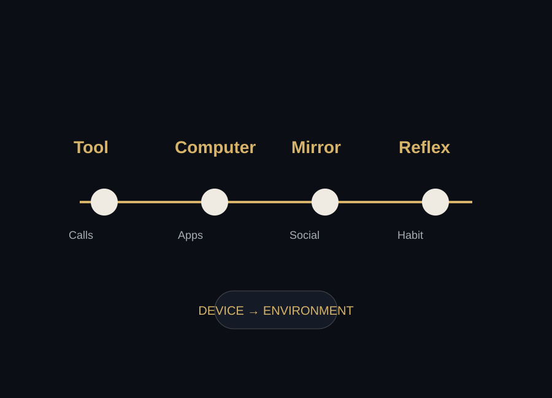

From Tool to Companion
The early promise of the phone was simple: communicate, coordinate, and carry important tools in one place. The modern smartphone kept that promise — then expanded into nearly every quiet moment of the day.

The phone earned trust by solving problems.
It helped people find directions, contact family, take photos, check school updates, follow work messages, and fill empty time. The more problems it solved, the more natural it became to keep it close.
That closeness changed the relationship. The phone moved from an object we used at certain moments to a companion that traveled through every moment: the desk, the dinner table, the bed, the car, the hallway, and the classroom.
The shift from device to environment.
Communication Tool
The phone begins as a way to reach people and coordinate life.
Pocket Computer
Apps turn the phone into a map, camera, bank, mailbox, notebook, and entertainment device.
Social Mirror
Notifications and feeds connect identity, attention, and social feedback.
Default Reflex
Checking becomes automatic whenever the mind meets boredom, pressure, or silence.
What problem did your phone originally solve for you?
Remember that answer. Later, compare it to what your phone asks from you now.
Next Exhibit: The Attention Economy